Node-RED
FlowFuse
FlowFuse es una plataforma que amplía las capacidades de Node-RED, proporcionando herramientas adicionales para la creación, gestión y despliegue de flujos de trabajo. Ofrece una interfaz más amigable y funcionalidades avanzadas como colaboración en tiempo real, integración con servicios en la nube y plantillas predefinidas para acelerar el desarrollo.
FlowFuse no reemplaza Node‑RED, sino que lo gestiona y lo potencia. Podríamos decir que Node‑RED es el motor y FlowFuse es la plataforma que lo gestiona y lo convierte en una solución empresarial.
Node-RED es una herramienta de programación visual low-code desarrollada en Node.js que se implementa en dispositivos controladores de hardware. Trabaja mostrando de manera visual las relaciones mediante nodos conectados por flujos de manera que se pueda programar sin escribir código. Se dice que es una herramienta low-code porque, aunque no es necesario escribir código para crear aplicaciones, sí que se puede hacer uso de código JavaScript para crear nodos personalizados.
Fue desarrollado originalmente por IBM para facilitar la programación de dispositivos IoT, pero ha evolucionado para convertirse en una plataforma versátil utilizada en una amplia variedad de aplicaciones, desde automatización del hogar hasta integración de sistemas empresariales.
Mediante un interfaz web, se pueden arrastrar y soltar nodos para crear flujos que representen la lógica de la aplicación. Cada nodo representa una función o acción específica, y los flujos conectan estos nodos para definir cómo los datos se mueven y se procesan. Así pues, permite integrar servicios a través de protocolos estándares como REST, MQTT, Websocket, AMQP, etc ... además de ofrecer integración con APIs de terceros, tales como X, MongoDB, S3, InfluxDB, MySQL, etc...
Hola Node-RED¶
Para arrancar Node-RED mediante Docker, empleamos el comando:
docker run -it -p 1880:1880 -v node_red_data:/data --name iabd-nodered nodered/node-red
Una vez, arrancado, si accedemos a http://localhost:1880 se nos abrirá la pantalla de bienvenida:
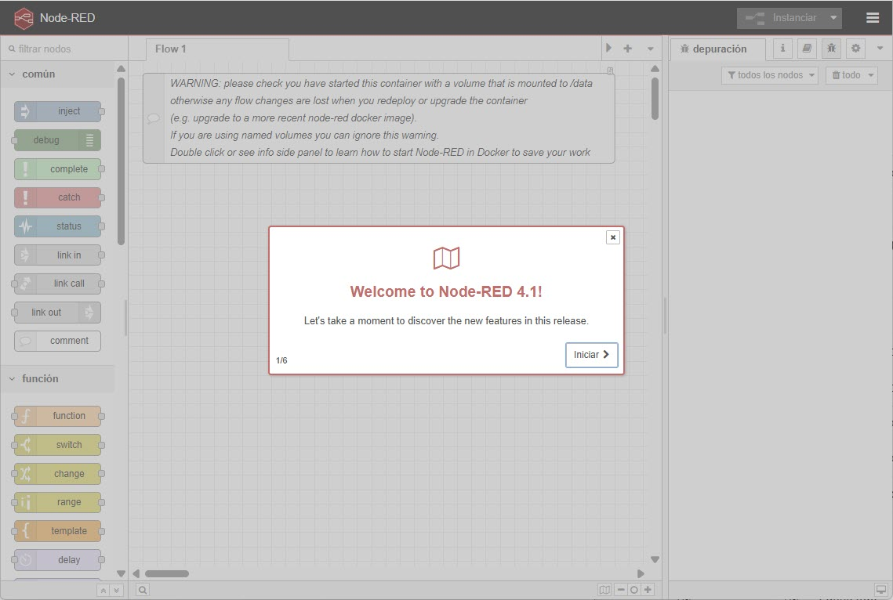
El entorno de desarrollo de Node-RED se compone de los siguientes elementos:
- Paleta de nodos: situada en la parte izquierda, contiene los nodos disponibles que se pueden arrastrar al área de trabajo.
- Área de trabajo: situada en el centro, es donde se crean los flujos arrastrando y conectando nodos.
- Barra de herramientas: situada en la parte superior, contiene botones para acciones comunes como desplegar flujos, deshacer cambios, acceder a la configuración, etc.
- Panel lateral: situado en la parte derecha, muestra información adicional como la documentación de los nodos seleccionados, el depurador, etc.
Para nuestra primera toma de contacto con Node-RED, vamos a crear un flujo sencillo que genere un mensaje cada segundo y lo muestre en la consola de depuración.
Desde la paleta de nodos, vamos a arrastrar un nodo inject (inyectar) al área de trabajo. Este nodo se utiliza para iniciar flujos manualmente o en intervalos regulares. A continuación, arrastramos un nodo debug (depurar) al área de trabajo. Este nodo se utiliza para mostrar mensajes en la consola de depuración. Finalmente, conectamos la salida del nodo inject a la entrada del nodo debug haciendo clic en el pequeño cuadrado de la derecha del nodo inject y arrastrando una línea hasta el pequeño cuadrado de la izquierda del nodo debug.
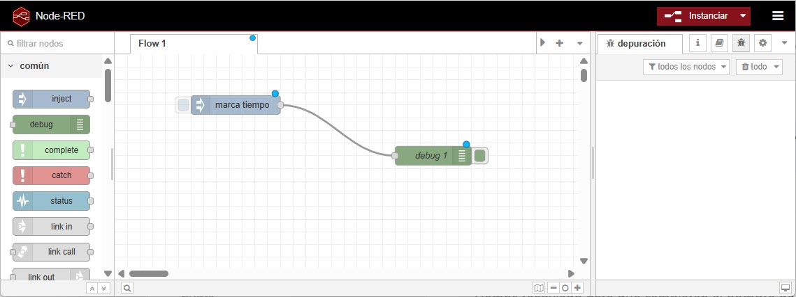
Para configurar el nodo inject, hacemos doble clic sobre él. En la ventana de configuración, podemos establecer, tanto el valor a inyectar (por defecto es un timestamp) como el intervalo de tiempo para que el nodo genere un mensaje. De momento, no vamos a tocar nada, para que sólo se envíe un mensaje al hacer clic sobre el nodo. Otra posibilidad sería configurarlo para que envíe un mensaje cada segundo seleccionando la opción "intervalo" y estableciendo el valor a "1 segundo".
Del mismo modo, para configurar el nodo debug, hacemos doble clic sobre él. En la ventana de configuración, podemos elegir qué parte del mensaje queremos mostrar en la consola de depuración. Por defecto, está configurado para mostrar el msg.payload, que es la parte principal del mensaje.
Si nos fijamos en la imagen, tanto los nodos como las conexiones entre ellos tienen un pequeño círculo azul. Esto indica que hay cambios sin desplegar en el flujo.
Finalmente, para desplegar el flujo y ponerlo en funcionamiento, hacemos clic en el botón "Instanciar" situado en la barra de herramientas superior (el cual debería estar en rojo indicando que tenemos cambios sin desplegar). Una vez desplegado, si hacemos clic en el nodo inject podremos observar cómo aparece un mensaje en la consola de depuración situada en el panel lateral derecho.
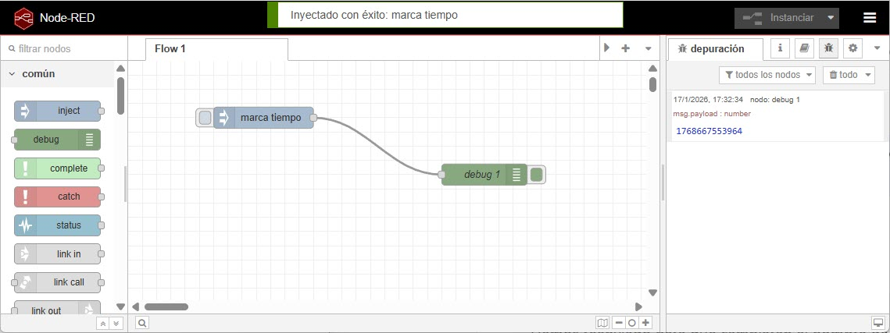
¡Genial! Acabamos de crear y ejecutar nuestro primer flujo en Node-RED.
Añadiendo lógica¶
Uno de los nodos más útiles en Node-RED es el nodo function (función), que nos permite escribir código JavaScript personalizado para procesar mensajes. Vamos a modificar nuestro flujo anterior para incluir un nodo function que transforme el mensaje antes de enviarlo al nodo debug.
Tras arrastrar el nodo function al área de trabajo, lo colocamos entre el nodo inject y el nodo debug, esperando a que aparezca la línea de conexión automática. Si no aparece, conectamos manualmente la salida del nodo inject a la entrada del nodo function, y la salida del nodo function a la entrada del nodo debug.
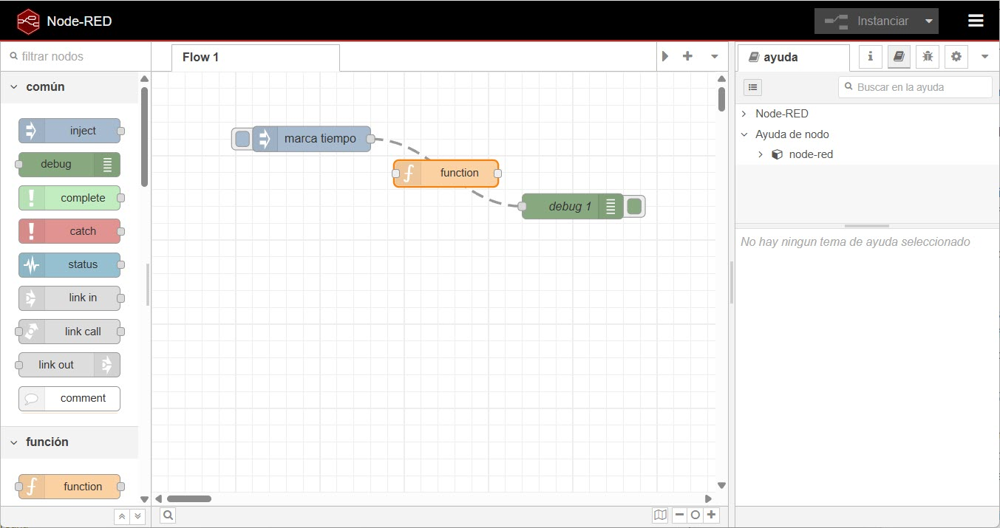
Hacemos doble clic sobre el nodo function para abrir la ventana de configuración. En el campo de código, escribimos una función simple que transforme el mensaje recibido. Por ejemplo, podemos crear una función que convierta el timestamp en una cadena legible:
let fecha = new Date(msg.payload); // cogemos el timestamp del flujo anterior
let dia = fecha.toLocaleDateString('es-ES');
let hora = fecha.toLocaleTimeString('es-ES');
msg.payload = "Hoy es " + dia + " y son las " + hora;
return msg;
Tras desplegar el flujo de nuevo, al hacer clic en el nodo inject, veremos que el mensaje mostrado en la consola de depuración una cadena similar a:
Hoy es 17/1/2026 y son las 16:47:10
Funciones avanzadas
Dentro de los nodos función, podemos por un lado, enviar mensajes a múltiples salidas, y por otro lado, devolver varios valores utilizando un array.
Por ejemplo, si queremos enviar dos mensajes diferentes a dos salidas distintas, podemos configurar el nodo función para que devuelva un array con dos mensajes:
let fecha = new Date(msg.payload);
let dia = fecha.toLocaleDateString('es-ES');
let hora = fecha.toLocaleTimeString('es-ES');
let msg1 = { payload: "Hoy es " + dia };
let msg2 = { payload: "Son las " + hora };
return [msg1, msg2];
Pero si lo que queremos es enviar varios mensaje a una única salida, podemos utilizar el método node.send() dentro del nodo función, el cual envía los mensajes de forma asíncrona:
let fecha = new Date(msg.payload);
let dia = fecha.toLocaleDateString('es-ES');
let hora = fecha.toLocaleTimeString('es-ES');
node.send({ payload: "Hoy es " + dia });
node.send({ payload: "Son las " + hora });
return null; // No devolvemos nada, ya que hemos enviado los mensajes manualmente
Uso del logger¶
Node-RED incluye un sistema de registro (logging) que nos permite registrar mensajes en diferentes niveles de severidad, como info, warn, error, etc. Esto es útil para depurar y monitorear el comportamiento de nuestros flujos.
Dentro de un nodo función, podemos utilizar el objeto node para acceder al sistema de logging. Por ejemplo, para registrar un mensaje de información, podemos usar el método node.log():
let fecha = new Date(msg.payload);
let dia = fecha.toLocaleDateString('es-ES');
let hora = fecha.toLocaleTimeString('es-ES');
msg.payload = "Hoy es " + dia + " y son las " + hora;
node.log("Mensaje procesado: " + msg.payload);
return msg;
Del mismo modo, podemos registrar advertencias y errores utilizando node.warn() y node.error() respectivamente.
Consideraciones¶
Ahora que ya hemos trabajado con algunos nodos más, hemos de tener en cuenta algunas consideraciones importantes al trabajar con Node-RED:
- Cada nodo sólo puede tener una entrada y múltiples salidas.
- Si un nodo tiene cambios sin desplegar, se muestra un circulo azul sobre él. Si hay errores en la configuración, se muestra un triángulo rojo.
- Los mensaje que viajan de un nodo a otros son mensajes JSON.
Guardando y recuperando flujos¶
Para exportar nuestros flujos y guardarlos en un archivo JSON, podemos utilizar la opción de exportación integrada en Node-RED. Para ello, bien seleccionamos los nodos y mediante el botón derecho, seleccionamos la opción Exportar (Ctrl+E), o desde el menú (tres líneas horizontales) situado en la esquina superior derecha seguimos estos pasos.
En ambos casos, seguimos estos pasos, aparecerá un diálogo donde podremos elegir entre exportar todo el flujo o sólo los nodos seleccionados, y luego copiar el JSON al portapapeles o guardarlo directamente en un archivo.
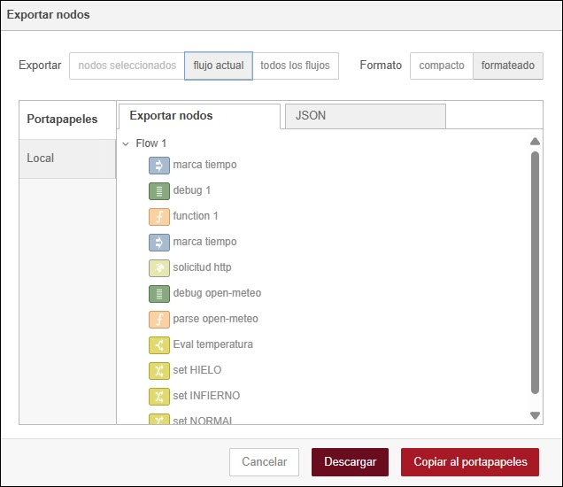
Del mismo modo, para importar flujos desde un archivo JSON, podemos utilizar la opción de importación integrada en Node-RED, ya sea mediante el botón derecho y seleccionando la opción Importar, la combinación Ctrl+I o el menú, donde podemos pegar el JSON copiado o cargar un archivo JSON desde nuestro sistema de archivos.
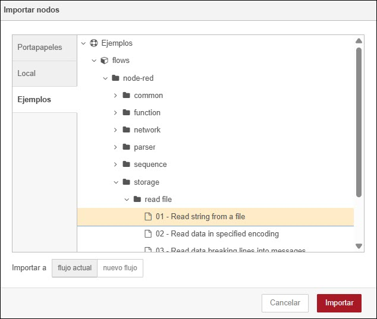
Tanto en la documentación oficial de Node-RED como en el propio diálogo de importación, podemos encontrar, para cada nodo, diferentes ejemplos de flujo que podemos pegar directamente en el dialogo de importación para probar su funcionamiento.
Trabajando con datos¶
En este apartado, exploraremos cómo trabajar con datos en Node-RED, incluyendo la lectura y escritura de datos, tanto en bases de datos como la integración con servicios externos.
Vamos a empezar recuperando datos desde una API REST pública. Para ello, utilizaremos el nodo http request (solicitud HTTP) que nos permite realizar solicitudes HTTP a servicios web. En nuestro caso, vamos a utilizar la API pública de Open-Meteo para obtener datos meteorológicos, siguiendo los siguientes pasos:
- Arrastramos un nodo
injectal área de trabajo y lo configuramos para que envíe un mensaje cada 10 minutos. - Arrastramos un nodo
http request(solicitud HTTP) al área de trabajo y lo conectamos a la salida del nodoinject. -
Hacemos doble clic en el nodo
http requestpara abrir la ventana de configuración, y configurar la URL de la API de Open-Meteo.Por ejemplo, mediante la siguiente URL podemos obtener los datos de temperatura actual, humedad relativa y precipitación para la ciudad de Elche (Latitud: 38.2622, Longitud: -0.7011):
https://api.open-meteo.com/v1/forecast?latitude=38.2622&longitude=-0.7011¤t=temperature_2m,relative_humidity_2m,precipitation&timezone=Europe%2FBerlin&forecast_days=1A continuación, en Devolver seleccionamos
un objeto JSON analizadopara que el nodo convierta automáticamente la respuesta en un objeto JSON. -
Arrastramos un nodo
debugal área de trabajo y lo conectamos a la salida del nodohttp request. -
Desplegamos el flujo y esperamos a que se ejecute. En la consola de depuración, veremos los datos meteorológicos en formato JSON.
{"latitude":38.25,"longitude":-0.6875,"generationtime_ms":0.036835670471191406,"utc_offset_seconds":3600,"timezone":"Europe/Berlin","timezone_abbreviation":"GMT+1","elevation":84,"current_units":{"time":"iso8601","interval":"seconds","temperature_2m":"°C","relative_humidity_2m":"%","precipitation":"mm"},"current":{"time":"2026-01-17T19:15","interval":900,"temperature_2m":11.4,"relative_humidity_2m":80,"precipitation":0}}
Como recuperamos mucha información que no nos interesa, vamos a añadir un nodo function entre el nodo http request y el nodo debug para extraer sólo los datos que necesitamos (temperatura, humedad y precipitación), renombrando también las propiedades del mensaje para que sean más comprensibles:
let valores = msg.payload.current;
msg.payload = {
fecha: valores.time,
temperatura: valores.temperature_2m,
humedad: valores.relative_humidity_2m,
precipitacion: valores.precipitation
};
return msg;
Si desplegamos el flujo de nuevo y esperamos a que se ejecute, veremos en la consola de depuración un mensaje más limpio y fácil de entender:
{"fecha":"2026-01-17T19:00","temperatura":11.7,"humedad":79,"precipitacion":0.00}
En resumen, tendremos un flujo similar al siguiente:
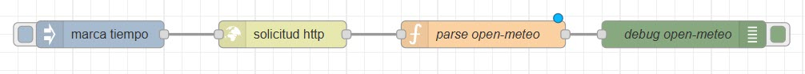
Uso de mensajes¶
Ya hemos visto que los flujos Node-RED funcionan pasando mensajes entre nodos. Los mensajes son objectos JSON que pueden tener cualquier conjunto de propiedades
Los mensajes generalmente contienen la propiedad payload, la cual es la propiedad predeterminada con la que trabajarán la mayoría de los nodos.
Como todo objeto JSON, las propiedad pueden ser de cualquier tipo de dato de JS, ya sean booleanos, enteros, cadenas de texto, arrays u otros objetos JSON.
Si recibimos una cadena JSON en un nodo function, podemos convertirla en un objeto JavaScript utilizando JSON.parse(). Por ejemplo:
let jsonString = '{"nombre":"Aitor","apellido1":"Medrano","ciudad":"Elche"}';
let obj = JSON.parse(jsonString);
msg.payload = obj;
return msg;
Para cambiar el contenido de un mensaje, lo podemos hacer directamente en un nodo function, asignando nuevos valores a las propiedades del mensaje, o de forma no-code mediante un nodo change, el cual nos permite asignar una nueva propiedad, modificar una existente o eliminar una propiedad.
Contexto¶
Node-RED proporciona un sistema de contexto que permite almacenar datos entre ejecuciones de nodos. Hay tres niveles de contexto:
- Contexto de nodo: los datos se almacenan y son accesibles sólo dentro del nodo específico, mediante variables locales al nodo.
- Contexto de flujo: los datos se almacenan y son accesibles por todos los nodos dentro del mismo flujo, pero no por nodos en otros flujos. Para ello, accederemos a las variables
flow. - Contexto global: los datos se almacenan y son accesibles por todos los nodos en todos los flujos, mediante la variable
global.
Por ejemplo, si queremos contar cuántas veces se ha ejecutado un nodo específico, podemos utilizar el contexto de flujo para almacenar el contador. En un primer nodo, inicializamos el contador, y en un segundo nodo, incrementamos el contador y mostramos el valor actualizado:
-
Nodo 1: inicializa el contador en el contexto de flujo.
init.js// Almacenar un valor en el contexto de flujo flow.set("contador", 0); -
Nodo 2: incrementa el contador y muestra el valor.
inc.js// Recuperar un valor del contexto de flujo let contador = flow.get("contador") || 0; contador += 1; flow.set("contador", contador); msg.payload = "Este nodo ha sido ejecutado " + contador + " veces."; return msg;
Si en cambio, queremos almacenar datos compartidos entre todos los flujos, podemos utilizar el contexto global de la siguiente manera:
-
Flujo 1: almacena un valor en el contexto global.
setGlobal.js// Almacenar un valor en el contexto global global.set("usuario", "Aitor Medrano"); -
Flujo 2: recupera el valor almacenado en el contexto global.
getGlobal.js// Recuperar un valor del contexto global let usuario = global.get("usuario"); msg.payload = "El usuario actual es: " + usuario; return msg;
Cabe destacar que el contexto de Node-RED se mantiene incluso si se reinicia el servidor, siempre y cuando se haya configurado correctamente el almacenamiento persistente en el archivo settings.js. Dicho esto, el uso de variables globales debe hacerse con precaución para evitar conflictos entre diferentes flujos o nodos.
Añadiendo lógica de control¶
Vamos a suponer que queremos enviar una alerta cuando la temperatura baje de 4 grados, por posibilidad de heladas.o sea superior a 40 grados, por calor extremo. Para ello, añadiremos un nodo switch (conmutador) entre el nodo function y el nodo debug. El nodo switch nos permite dirigir el flujo de mensajes en función de condiciones específicas. Configuramos el nodo switch para que evalúe la propiedad temperatura del mensaje y cree tres salidas:
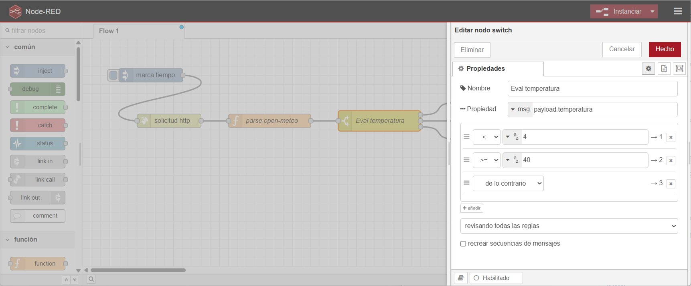
Al añadir tres posibilidades para los diferentes rangos de temperatura, el nodo tendrá tres salidas, una por cada valor posible:
- Si la temperatura es menor que 4 grados, el mensaje se dirige a la primera salida.
- Si la temperatura es mayor o igual a 40 grados, el mensaje se dirige a la segunda salida.
- En cualquier otro caso, el mensaje se dirige a la tercera salida.
Ahora podríamos conectar cada una de las salidas a un nodo debug para comprobar que el flujo funciona correctamente. Pero en lugar de eso, vamos a conectar cada salida a un nodo de tipo change (cambiar) para modificar el mensaje y añadir una alerta específica para cada caso.
Así pues, configuramos el primer nodo change para que establezca el msg.payload a "Alerta HIELO. Temperatura actual: X °C", donde X es el valor de la temperatura. De manera similar, configuramos el segundo nodo change para que establezca el msg.payload a "Alerta: INFIERNO. Temperatura actual: X °C", y el último nodo con el mensaje "Temperatura normal: X °C". Para ello, en cada nodo change, añadimos una regla que establece el msg.payload a una expresión JSONata, donde usaremos & para concatenar cadenas, y usaremos payload.propiedad para acceder al valor deseado. Así pues, por ejemplo, en el primer nodo, usaremos la expresión "Alerta HIELO. Temperatura actual: " & payload.temperatura & "ºC":
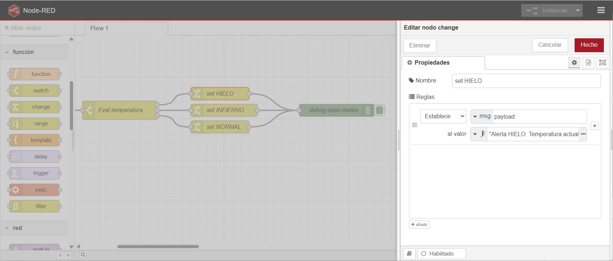
Finalmente, conectamos todos los nodos change a un mismo nodo debug para visualizar las alertas en la consola de depuración.
Almacenando datos¶
Dependiendo de las necesidades de nuestra aplicaciones, en muchas ocasiones, necesitamos persistir la información que recogemos en uno o varios sistemas de almacenamiento de datos.
Dependiendo del escenario, podemos emplear MySQL / MariaDB / PostgreSQL si no insertamos datos con una frecuencia muy alta y posteriormente necesitamos realizar consultas agregadas. También podemos utilizar MongoDB, cuanto tenemos datos semi-estructurados o utilizamos series temporales. Como Node-RED trabaja con documentos JSON, MongoDB se plantea como una solución muy natural. Finalmente, dentro del mundo IoT, InfluxDB es una base de datos optimizada para series temporales, que realiza de forma muy eficiente consultas por rangos de tiempo.
Usando la paleta de nodos¶
Independiente de la solución a emplear, Node-RED dispone de una paleta de nodos a modo de catálogo de componentes disponibles. Así pues, podemos ampliar las integraciones de la herramienta según nuestras necesidades.
Para ello, en el menú superior de la derecha, tenemos la opción Administrar paleta (Alt+Shift+P), donde podremos ver los módulos instalados o instalar nuevos:
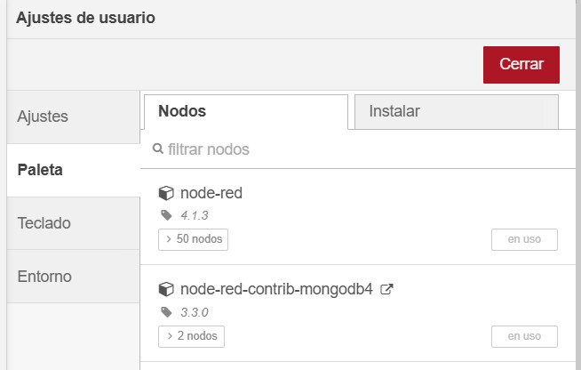
En mi caso, ya tengo instalado el módulo de MongoDB. Si tenéis una instalación desde cero, necesitáis instalar el módulo node-red-contrib-mongodb4, el cual nos proporciona nodos específicos para realizar operaciones CRUD (Crear, Leer, Actualizar, Eliminar).
Utilizando MongoDB¶
Una vez hemos instalado el módulo, en el bloque lateral de la izquierda, nos aparecerá un nuevo nodo mongodb4 en verde, el cual nos sirve para interactuar con MongoDB, tanto para realizar operaciones de inserción de datos, como para realizar consultar.
Para el siguiente ejemplo, vamos a utilizar la conexión a MongoAtlas con la que hemos trabajado durante todo el curso.
En este caso, vamos a rellenar un mensaje sencillo con una temperatura ficticia, y la vamos a insertar en MongoDB.
Así pues, en un nodo función, añadiremos el siguiente código:
let documento = {
"lugar": "Severo Ochoa",
"fecha": new Date(msg.payload),
"timestamp": msg.payload,
"temperatura": Math.round(Math.random() * 30 + 10)
}
msg.payload = documento;
return msg;
A continuación, utilizamos el nodo mongodb y:
-
Configuramos la conexión, indicando el nombre del servidor y la base de datos en la cadena de conexión del hostname, así como el usuario y la contraseña:
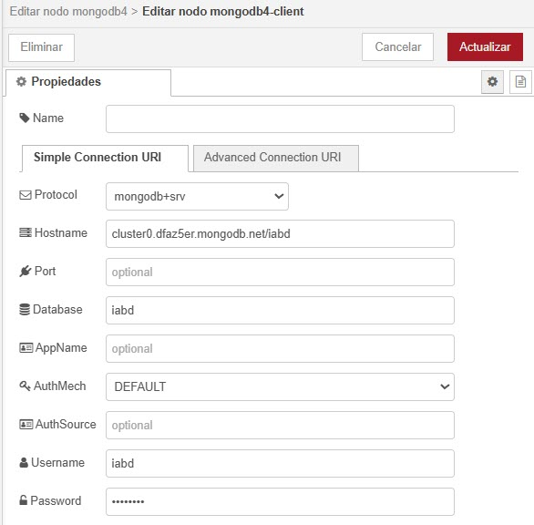
Conexión a MongoDB desde Node-RED -
Configuramos tanto la colección como la operación a realizar, teniendo en cuenta que las posibles operaciones son
find,findOne,insertOne,insertMany, etc...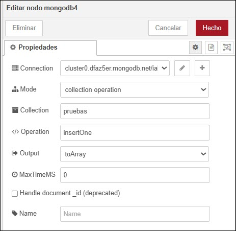
Operación con MongoDB desde Node-RED
Finalmente, conectamos los nodos y desplegamos el flujo:
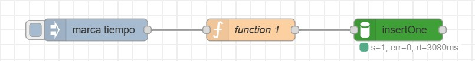
Tras inyectar un valor, si vamos a MongoDB, podemos comprobar que el documento se ha insertado correctamente, respetando los tipos de los datos:
> db.pruebas.find()
< {
_id: ObjectId('696fbb396283a535f6438435'),
lugar: 'Severo Ochoa',
fecha: 2026-01-20T17:28:25.147Z,
timestamp: 1768930105147,
temperatura: 17
}
MQTT con Node-RED¶
MQTT (Message Queue Telemetry Transport) es un protocolo ideado por IBM y liberado para que cualquiera podamos usarlo enfocado a la conectividad Machine-to-Machine (M2M). Dicho esto, MQTT es un protocolo pensado para IoT que se sitúa por encima de TCP/IP, y que está al mismo nivel que HTTP.
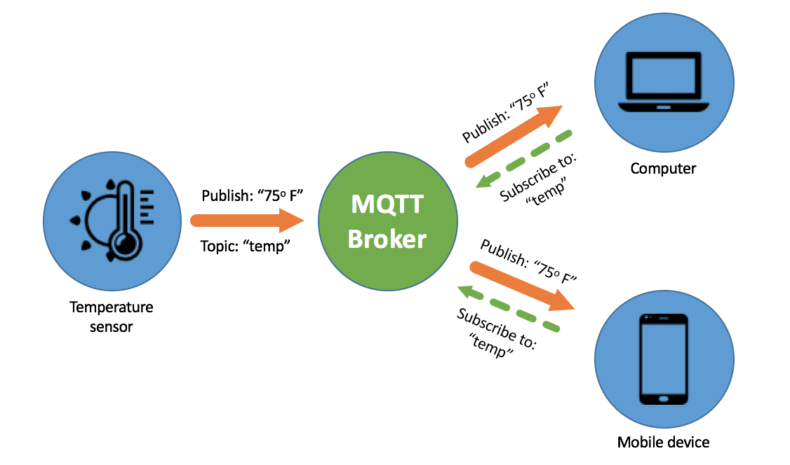
MQTT sigue un modelo de comunicación publish-subscribe, donde los dispositivos (clientes) pueden publicar mensajes en temas específicos (topics) o suscribirse a esos temas para recibir mensajes. La comunicación se realiza a través de un intermediario llamado broker, que se encarga de distribuir los mensajes entre los clientes suscritos a los temas correspondientes.
Algunos de los brokers más conocidos son Mosquitto, HiveMQ o RabbitMQ.
Así pues, un cliente puede actuar como publisher (publicador) enviando mensajes a un tema específico, o como subscriber (suscriptor) recibiendo mensajes de los temas a los que está suscrito. Esta arquitectura permite una comunicación eficiente y escalable entre dispositivos, ya que los clientes no necesitan conocer la existencia de otros clientes para intercambiar mensajes. Además, MQTT es un protocolo ligero y eficiente en términos de ancho de banda y consumo de energía, lo que lo hace ideal para dispositivos con recursos limitados, como sensores y actuadores en entornos IoT.
Definición de topics
A la hora de definir los topics en MQTT, es importante seguir una estructura jerárquica utilizando barras inclinadas (/) para separar los niveles. Por ejemplo, un topic para sensores de temperatura en diferentes ubicaciones podría ser:
sensores/temperatura/salon
sensores/temperatura/cocina
sensores/temperatura/exterior
Podemos utilizar caracteres comodín para suscripciones más flexibles:
+(más): representa un solo nivel en la jerarquía del topic. Por ejemplo,/sensores/+/saloncoincidiría con/sensores/temperatura/salony/sensores/humedad/salon.#(almohadilla): representa múltiples niveles en la jerarquía del topic. Por ejemplo,/sensores/#coincidiría con todos los temas que comienzan con/sensores/, como/sensores/temperatura/salon,/sensores/humedad/cocina, etc.
Algunos conceptos que conviene conocer son:
- QoS (Quality of Service, o en español calidad del servicio, CdS): MQTT ofrece tres niveles de calidad de servicio para la entrega de mensajes: 0 (entrega al menos una vez), 1 (entrega al menos una vez con confirmación) y 2 (entrega exactamente una vez). Esto permite a los desarrolladores elegir el nivel de confiabilidad adecuado según las necesidades de su aplicación.
- Retained Messages (Mensajes retenidos): MQTT permite que los mensajes sean retenidos por el broker, lo que significa que el último mensaje publicado en un tema específico se almacena y se envía automáticamente a cualquier nuevo suscriptor que se conecte a ese tema. Esto es útil para garantizar que los nuevos suscriptores reciban la información más reciente sin necesidad de esperar a que se publique un nuevo mensaje.
Enviando y recibiendo¶
Dentro de Node-RED, en la categoría network, disponemos de los nodos mqtt in y mqtt out para recibir y enviar datos a un broker MQTT. Para los siguientes ejemplos vamos a utilizar un broker MQTT público como es el de HiveMQ, el cual podemos monitorizar desde su dashboard. Otros brokers gratuitos son Shiftr.io o Mosquitto.
Vamos a realizar un flujo sencillo donde la salida un nodo función se publique en un topic MQTT, y a su vez, otro nodo MQTT reciba el mensaje y lo muestre en la consola de depuración. Para ello, seguimos los siguientes pasos:
- Arrastramos un nodo
injectal área de trabajo y lo configuramos para que envíe un mensaje cada 10 segundos. -
Arrastramos un nodo
functional área de trabajo y lo conectamos a la salida del nodoinject. En el nodo función, repetimos el mismo código del ejemplo anterior:let documento = { "lugar": "Severo Ochoa", "fecha": new Date(msg.payload), "timestamp": msg.payload, "temperatura": Math.round(Math.random() * 30 + 10) } msg.payload = documento; return msg; -
Arrastramos un nodo
mqtt outal área de trabajo y lo conectamos a la salida del nodofunction.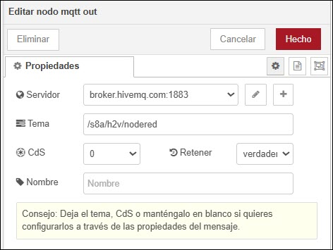
Nodo de MQTT-out en Node-RED - Creamos un servidor donde indicamos la conexión al broker MQTT público de HiveMQ, indicando como servidor
broker.hivemq.comy puerto1883. Al utilizar el broker público de HiveMQ, no es necesario autenticarse, por lo que dejaremos la pestaña de seguridad tal cual. - Configuramos el topic donde se publicarán los mensajes, en nuestro caso,
/s8a/h2v/nodered. - Configuramos la política de QoS a
0(que significa que se asegura que el mensaje sea entregado al menos una vez) y el flag de retención de mensajes averdadero(lo que permite que otros nodos puedan recibir el último mensaje publicado).
- Creamos un servidor donde indicamos la conexión al broker MQTT público de HiveMQ, indicando como servidor
Si desplegamos el flujo y esperamos unos segundos, se enviarán mensajes al broker MQTT. Vamos a crear otro flujo para recibir los mensajes publicados en el topic /s8a/h2v/nodered y comprobar que llegan correctamente:
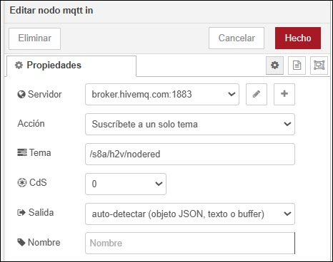
-
Arrastramos un nodo
mqtt inal área de trabajo.- Configuramos el mismo servidor MQTT que hemos creado anteriormente.
- Configuramos el topic
/s8a/h2v/noderedpara suscribirnos a los mensajes publicados en dicho topic. Si quisiéramos recibir todos los mensajes publicados en todos los topics des8a, podemos usar el comodín/s8a/#. - Configuramos la política de QoS a
0(la misma que hemos usado al publicar).
-
Si conectamos la salida del nodo función a un nodo
debugpara visualizar los mensajes en la consola de depuración, veremos como cada 10 segundos, recibimos un nuevo mensaje publicado desde el otro flujo con la información enviada:{ "lugar":"Severo Ochoa", "fecha":"2026-01-23T08:26:45.327Z", "timestamp":1769156805327, "temperatura":15 }
Consideraciones al trabajar con fechas
Cuando recuperamos un mensaje que proviene del nodo mqtt in, obtendremos un JSON que los datos como cadenas o números. Esto quiere decir, que si queremos trabajar con fechas, necesitamos convertir los campos que sean fechas a tipos Date. En nuestro caso, lo más recomendable es añadir un nodo función donde reescribamos la propiedad que nos interese:
// cambiamos el tipo para que funcione bien la fecha
msg.payload.timestamp = new Date(msg.payload.timestamp);
return msg;
Así pues, tendremos un flujo similar al siguiente:
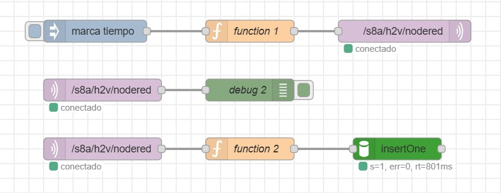
Cuadros de mando con Node-RED Dashboard¶
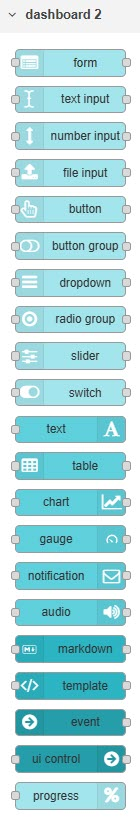
Mediante Node-RED también podemos crear cuadros de mando (dashboards) para visualizar datos en tiempo real. Antiguamente se utilizaba el módulo adicional node-red-dashboard, el cual proporciona una serie de nodos específicos para crear interfaces de usuario interactivas, pero desde junio de 2024, se considera obsoleto y se recomienda utilizar el módulo Flowfuse Dashboard.
Así pues, nos ofrece un conjunto de nodos que permiten crear interfaces de usuario interactivas y visuales directamente desde Node-RED. Con estos nodos, podemos diseñar paneles de control (dashboards) que muestren datos en tiempo real, gráficos, controles deslizantes, botones y otros elementos visuales.
El primer paso es instalar el módulo flowfuse-dashboard desde la paleta de nodos, siguiendo los pasos descritos anteriormente, que añadirá una nueva categoría llamada dashboard 2 en la paleta de nodos, la cual puedes visualizar en la imagen de la derecha, así como un nuevo panel lateral llamado Dashboard en la parte derecha de la interfaz de Node-RED.
Antes de entrar a dibujar algunos ejemplos, es importante entender algunos conceptos clave sobre cómo funciona Flowfuse Dashboard. Cada elemento visual que añadimos al dashboard se organiza en una estructura jerárquica compuesta por:
- Página (Page): Son las páginas principales del dashboard. Podemos tener múltiples tableros para organizar diferentes conjuntos de elementos visuales.
- Grupos (Groups): Dentro de cada tablero, podemos crear grupos para agrupar elementos relacionados. Esto ayuda a mantener el dashboard organizado y facilita la navegación.
- Elementos (Widgets): Son los componentes visuales individuales que añadimos al dashboard, como gráficos, indicadores, botones, etc.
Cada nodo de Flowfuse Dashboard tiene una configuración específica que nos permite personalizar su apariencia y comportamiento. Por ejemplo, al configurar un nodo de gráfico, podemos definir el tipo de gráfico (líneas, barras, pastel, etc.), los ejes, los colores y otros parámetros visuales.
Nuestro primer dashboard¶
Vamos a utilizar el mismo flujo que hemos creado en el apartado anterior para mostrar datos meteorológicos, pero esta vez, en lugar de enviar los datos a la consola de depuración, los mostraremos en un dashboard. Para ello, seguimos los siguientes pasos:
- Añadimos un nodo de tipo
ui_text(texto) al área de trabajo y lo conectamos a la salida del nodofunctionque procesa los datos meteorológicos. -
Configuramos el nodo
ui_textpara que muestre la temperatura actual.- En la pestaña
Propiedades, asignamos un nombre descriptivo al nodo, comoTemperatura, e indicamos que queremos mostrar la propiedadpayload.temperatura. -
En la pestaña
Layout, seleccionamos la página y el grupo donde queremos que aparezca el texto en el dashboard. Si no hemos creado ninguna página o grupo, podemos hacerlo desde esta misma pestaña. Es recomendable editar tanto la página como el grupo y ponerle un nombre descriptivo.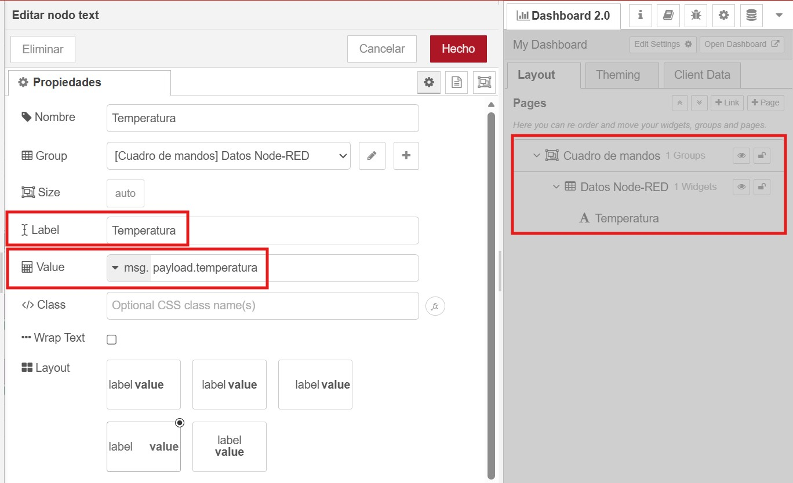
Propiedad de un nodo text en Node-RED -
Pulsamos sobre el botón
Open dashboardy se nos abrirá una nueva pestaña en el navegador con el cuadro de mandos:
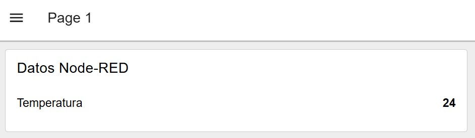
Cuadro de mandos con un nodo text en Node-RED - En la pestaña
Podríamos añadir más nodos para mostrar el valor de más propiedades. Por ejemplo, podríamos añadir otro cuadro de texto para mostrar el lugar.
Otra posibilidad es añadir un nodo button para que funcione como un actuador y provoque la ejecución de todo el flujo. Así pues, lo arrastramos al flujo y la salida del botón la conectamos al nodo función.
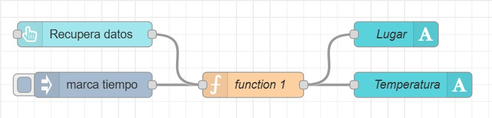
Tras desplegar, si volvemos a visualizar el cuadro de mandos, obtendremos algo similar a:
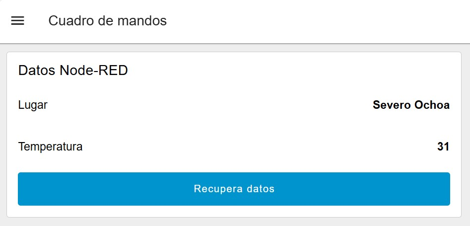
Referencias¶
Actividades¶
Para las siguientes actividades, se valorará tanto la correcta implementación del flujo en Node-RED, como la calidad del código JavaScript empleado en los nodos function, así como la correcta documentación del flujo mediante comentarios.
-
(RAMIA.4 / CEMIA.4d / 2p) Crea un flujo que simule la lectura de datos de temperatura interior y exterior, humedad y una alarma (on/off) generados de manera aleatoria cada 30 segundos. Dichos datos se deben agrupar dentro de un mismo objeto JSON, y posteriormente, deben ser enviados a un nodo
debugpara su visualización en la consola de depuración. -
(RAMIA.4 / CEMIA.4d / 2p) Crea un nuevo flujo que a partir de los valores anteriores, sustituya la temperatura exterior por el valor devuelto por el servicio de Open-Meteo para la ciudad de Elche. El flujo debe ejecutarse cada 30 segundos, y los datos resultantes deben almacenarse en MongoDB Atlas dentro de una colección llamada
sensores. -
(RAMIA.4 / CEMIA.4d / 2p) A partir del flujo anterior, envía los datos a un broker MQTT público en el topic
/iabd/sensores/XYZ(siendoXYZtus iniciales) cada vez que la temperatura interior supere los 25 grados o la humedad sea superior al 70%. A continuación, crea un nuevo flujo que reciba los datos desde el broker MQTT y los almacene en una nueva colección llamadaalertasen MongoDB Atlas. -
(RAMIA.4 / CEMIA.4d / 2p) Crea un cuadro de mando con Node-RED Dashboard que muestre en tiempo real los datos de temperatura interior y exterior, humedad y estado de la alarma. Además, incluye un gráfico que muestre la evolución de la temperatura interior durante la última hora.